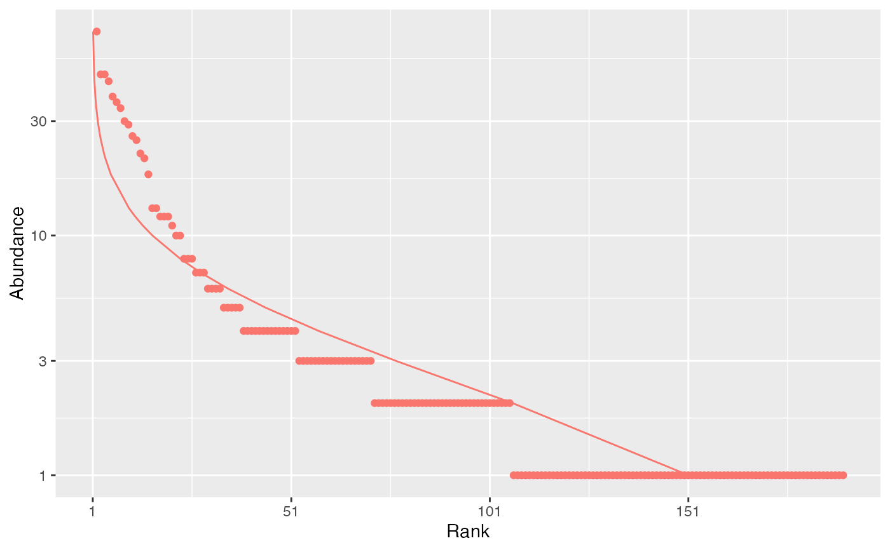

A Species Distribution is a tibble::tibble containing species abundances or probabilities.
species_distribution(x, names = NULL, weights = NULL, check_arguments = TRUE)
as_species_distribution(x, ...)
# S3 method for numeric
as_species_distribution(x, ..., check_arguments = TRUE)
# S3 method for matrix
as_species_distribution(
x,
names = NULL,
weights = NULL,
...,
check_arguments = TRUE
)
# S3 method for data.frame
as_species_distribution(x, ..., check_arguments = TRUE)
is_species_distribution(x)
as_probabilities(x, ...)
# S3 method for numeric
as_probabilities(x, ..., check_arguments = TRUE)
# S3 method for matrix
as_probabilities(x, names = NULL, weights = NULL, ..., check_arguments = TRUE)
# S3 method for data.frame
as_probabilities(x, ..., check_arguments = TRUE)
is_probabilities(x)
abundances(
x,
round = TRUE,
names = NULL,
weights = NULL,
check_arguments = TRUE
)
as_abundances(x, ...)
# S3 method for numeric
as_abundances(x, round = TRUE, ..., check_arguments = TRUE)
# S3 method for matrix
as_abundances(
x,
round = TRUE,
names = NULL,
weights = NULL,
...,
check_arguments = TRUE
)
# S3 method for data.frame
as_abundances(x, ..., check_arguments = TRUE)
is_abundances(x)
# S3 method for species_distribution
as.matrix(x, use.names = TRUE, ...)
# S3 method for species_distribution
as.double(x, use.names = TRUE, ...)
# S3 method for species_distribution
as.numeric(x, use.names = TRUE, ...)an object.
The names of the species distributions.
The weights of the sites of the species distributions.
If TRUE, the function arguments are verified.
Should be set to FALSE to save time when the arguments have been checked elsewhere.
Unused.
If TRUE, the values of x are converted to integers.
If TRUE, the names of the species_distribution are kept
in the matrix or vector they are converted to.
species_distribution objects include abundances and probabilities
objects.
as_species_distribution(), as_abundances() and as_probabilities format
the numeric, matrix or dataframe x so that appropriate
versions of community functions (generic methods such as plot or
div_richness) are applied.
Abundance values are rounded (by default) to the nearest integer.
as_probabilities() normalizes the vector x so that it sums to 1. It gives
the same output as probabilities() with estimator = "naive".
species_distribution objects objects can be plotted by plot and autoplot.
as.double() and its synonymous as.numeric() return a numeric vector
that contains species abundances or probabilities of a single-row
species_distribution.
as.matrix() returns a numeric matrix if the species_distribution contains
several rows.
These are methods of the generic functions for class species_distribution.
There are no references for Rd macro \insertAllCites on this help page.
# Paracou data is a tibble
paracou_6_abd
#> # A tibble: 4 × 337
#> site weight Abarema_jupunba Abarema_mataybifolia Amaioua_guianensis
#> <chr> <dbl> <int> <int> <int>
#> 1 subplot_1 1.56 2 2 1
#> 2 subplot_2 1.56 2 0 1
#> 3 subplot_3 1.56 2 2 0
#> 4 subplot_4 1.56 4 0 0
#> # ℹ 332 more variables: Amanoa_congesta <int>, Amanoa_guianensis <int>,
#> # Ambelania_acida <int>, Amphirrhox_longifolia <int>, Andira_coriacea <int>,
#> # Apeiba_glabra <int>, Aspidosperma_album <int>, Aspidosperma_cruentum <int>,
#> # Aspidosperma_excelsum <int>, Bocoa_prouacensis <int>,
#> # Brosimum_guianense <int>, Brosimum_rubescens <int>, Brosimum_utile <int>,
#> # Carapa_surinamensis <int>, Caryocar_glabrum <int>, Casearia_decandra <int>,
#> # Casearia_javitensis <int>, Catostemma_fragrans <int>, …
# Class
class(paracou_6_abd)
#> [1] "abundances" "species_distribution" "tbl_df"
#> [4] "tbl" "data.frame"
is_species_distribution(paracou_6_abd)
#> [1] TRUE
# Whittaker plot fitted by a log-normal distribution
autoplot(paracou_6_abd[1,], fit_rac = TRUE, distribution = "lnorm")
